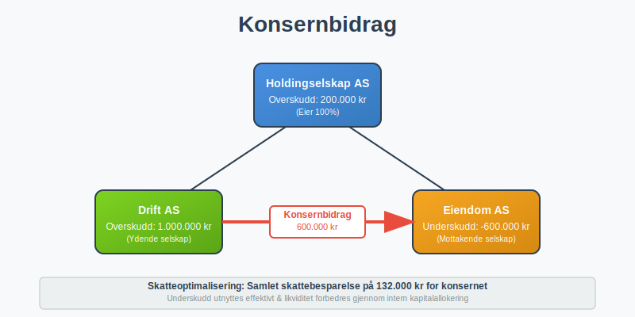
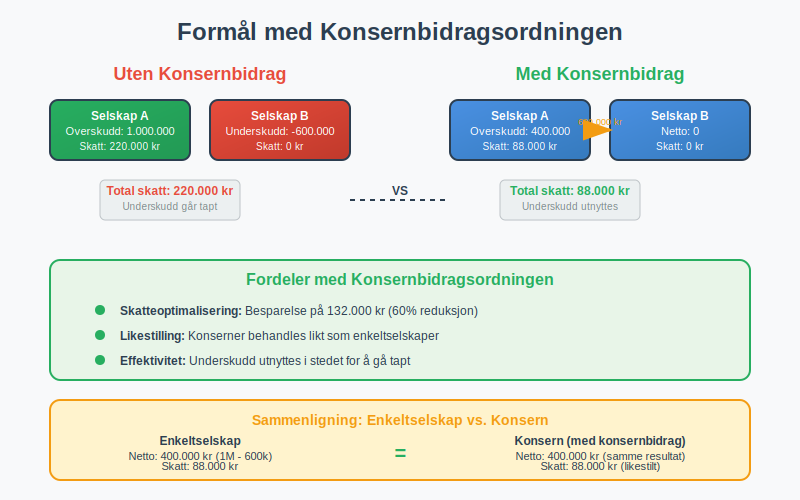
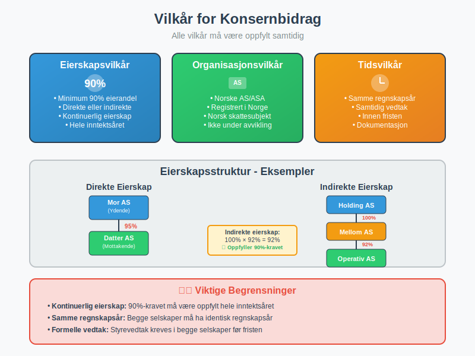
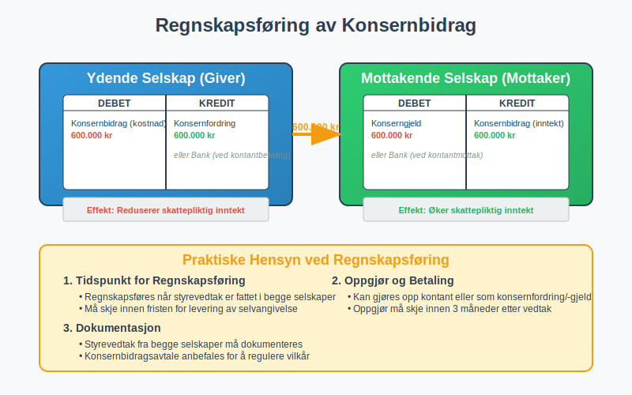
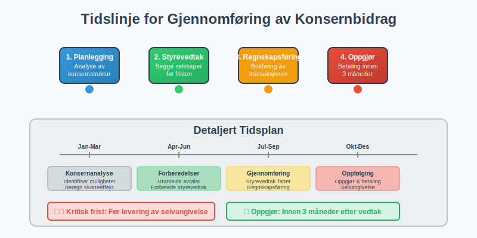
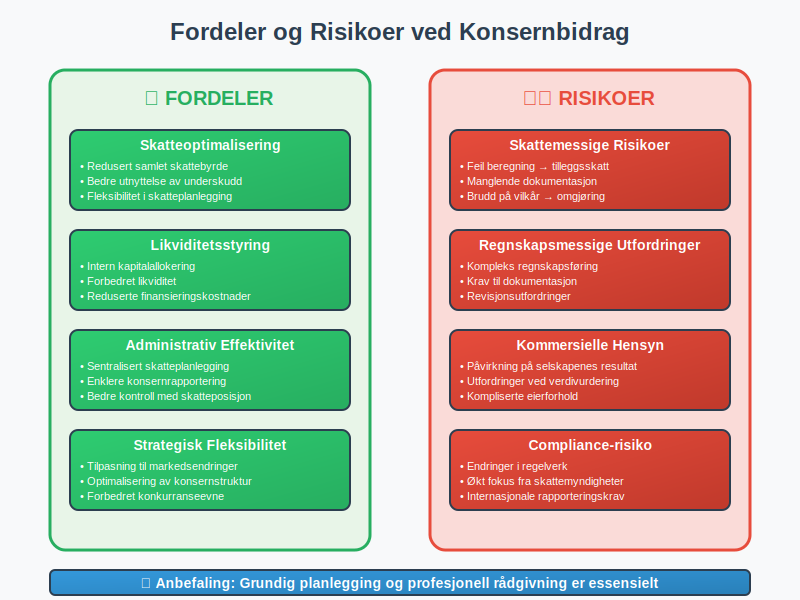
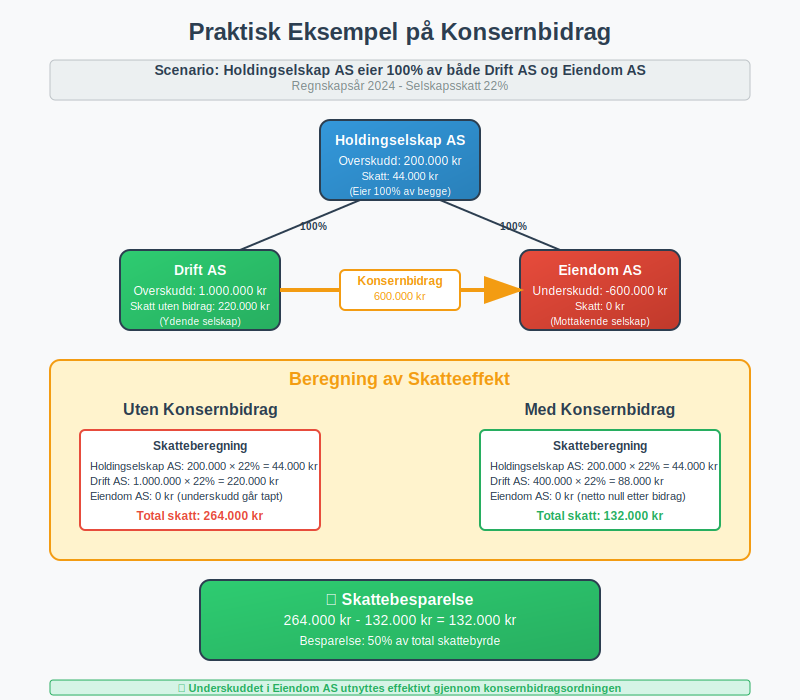

Konsernbidrag er en skattemessig ordning som gir selskaper i samme konsern mulighet til å overføre underskudd og overskudd mellom seg. Dette er et viktig verktøy for skatteoptimalisering og effektiv kapitalforvaltning i konsernstrukturer.

Hva er Konsernbidrag?
Konsernbidrag er en skattemessig mekanisme som gjør det mulig for selskaper som inngår i samme konsern å:
- Overføre underskudd fra underskuddsselskap til overskuddsselskap
- Utjevne skattebelastningen mellom selskapene i konsernet
- Optimalisere den samlede skatteposisjonen for hele konsernet
- Forbedre likviditeten gjennom intern kapitalallokering
Ordningen er regulert i skatteloven § 10-2 og er en sentral del av det norske skattesystemet for konserner.
Formål med Konsernbidragsordningen
Hovedformålet med konsernbidragsordningen er å likestille konserner med enkeltselskaper når det gjelder skattemessig behandling. Uten denne ordningen ville konserner være i en dårligere skatteposisjon enn enkeltselskaper som kan motregne underskudd mot overskudd internt.

Vilkår for Konsernbidrag
For at konsernbidrag skal kunne ytes, må flere strenge vilkår være oppfylt:
Eierskapsvilkår
- Minimum 90% eierandel - Det ydende selskap må eie minst 90% av aksjene i det mottakende selskap, eller omvendt
- Direkte eller indirekte eierskap - Eierforholdet kan være direkte eller gjennom andre selskaper i konsernet
- Kontinuerlig eierskap - Eierskapet må ha bestått i hele inntektsåret
Organisasjonsvilkår
Både det ydende og mottakende selskap må være:
- Norske aksjeselskaper eller allmennaksjeselskaper
- Registrert i Norge med norsk skattesubjekt
- Ikke under avvikling eller konkursbehandling
Tidsvilkår
- Samme regnskapsår - Begge selskaper må ha samme regnskapsår
- Samtidig vedtak - Konsernbidraget må vedtas av begge selskapers styrer innen fristen

Typer Konsernbidrag
Det finnes to hovedtyper konsernbidrag:
1. Ordinært Konsernbidrag
- Fra overskuddsselskap til underskuddsselskap
- Reduserer skattepliktig inntekt for det ydende selskap
- Øker skattepliktig inntekt for det mottakende selskap
- Mest vanlige form for konsernbidrag
2. Negativt Konsernbidrag
- Fra underskuddsselskap til overskuddsselskap
- Overfører underskudd til selskap med overskudd
- Krever spesielle vilkår og dokumentasjon
- Mindre vanlig i praksis
Regnskapsføring av Konsernbidrag
Konsernbidrag skal regnskapsføres på følgende måte:
Hos det Ydende Selskap
Debet: Konsernbidrag (kostnad)
Kredit: Konsernfordring/Bank
Hos det Mottakende Selskap
Debet: Konserngjeld/Bank
Kredit: Konsernbidrag (inntekt)

Skattemessig Behandling
For det Ydende Selskap
- Konsernbidraget er fradragsberettiget i skattepliktig inntekt
- Reduserer selskapsskatt tilsvarende
- Må dokumenteres med vedtak og avtale
For det Mottakende Selskap
- Konsernbidraget er skattepliktig inntekt
- Øker grunnlaget for selskapsskatt
- Kan motregnes mot fremførbare underskudd
Skattemessig Nøytralitet
Konsernbidragsordningen er utformet for å være skattemessig nøytral for konsernet som helhet. Den samlede skattebelastningen skal ikke endres, men fordeles mer effektivt mellom selskapene.
Praktisk Gjennomføring
Styrevedtak
Begge selskaper må fatte formelle styrevedtak om konsernbidraget:
- Før fristen for levering av selvangivelse
- Spesifisere beløp og mottaker/yter
- Dokumentere begrunnelse for bidraget
Konsernbidragsavtale
Det anbefales å inngå en skriftlig avtale som regulerer:
- Beløpets størrelse og betalingstidspunkt
- Rentebetingelser ved forsinket betaling
- Eventuelle sikkerhetsstillelser
- Oppgjørsform (kontant eller fordring)
Frister
| Aktivitet | Frist |
|---|---|
| Styrevedtak | Før levering av selvangivelse |
| Betaling/oppgjør | Innen 3 måneder etter vedtak |
| Dokumentasjon | Sammen med selvangivelse |
| Revidering | Innen 6 måneder etter vedtak |

Fordeler med Konsernbidrag
Skatteoptimalisering
- Redusert samlet skattebyrde for konsernet
- Bedre utnyttelse av skattemessige underskudd
- Fleksibilitet i skatteplanlegging
Likviditetsstyring
- Intern kapitalallokering uten eksterne lån
- Forbedret likviditet for underskuddsselskaper
- Reduserte finansieringskostnader
Administrativ Effektivitet
- Sentralisert skatteplanlegging
- Enklere konsernrapportering
- Bedre kontroll med konsernets skatteposisjon
Risiko og Utfordringer
Skattemessige Risikoer
- Feil beregning av konsernbidrag kan føre til tilleggsskatt
- Manglende dokumentasjon kan medføre at fradraget ikke godkjennes
- Brudd på vilkår kan føre til omgjøring av skatteposisjonen
Regnskapsmessige Utfordringer
- Kompleks regnskapsføring ved konsernoppgjør
- Krav til dokumentasjon og sporbarhet
- Revisjonsutfordringer ved kontroll av konsernbidrag
Kommersielle Hensyn
- Påvirkning på selskapenes individuelle resultat
- Utfordringer ved verdivurdering av selskaper
- Kompliserte eierforhold kan skape praktiske problemer

Konsernbidrag vs. Andre Ordninger
Sammenligning med Konsernbeskatning
| Aspekt | Konsernbidrag | Konsernbeskatning |
|---|---|---|
| Skattesubjekt | Hvert selskap | Konsernet som helhet |
| Kompleksitet | Moderat | Høy |
| Fleksibilitet | Høy | Lav |
| Dokumentasjon | Omfattende | Mindre |
Forhold til Utbytte
Konsernbidrag skiller seg fra utbytte ved at:
- Ikke skattepliktig for mottaker (ved fritaksmetoden)
- Ikke fradragsberettiget for yter
- Krever overskudd og fri egenkapital
Internasjonale Aspekter
Konsernbidrag til Utenlandske Selskaper
- Begrenset adgang til konsernbidrag med utenlandske selskaper
- Spesielle regler for EØS-selskaper
- Krav til sammenlignbar beskatning i mottakerlandet
EU/EØS-Regler
- Ikke-diskrimineringsprinsippet påvirker konsernbidragsreglene
- Særlige vilkår for konsernbidrag til EØS-selskaper
- Dokumentasjonskrav for utenlandske mottakere
Eksempel på Konsernbidrag
Situasjon
Holdingselskap AS eier 100% av aksjene i både Drift AS og Eiendom AS:
- Drift AS: Overskudd på 1 000 000 kr
- Eiendom AS: Underskudd på 600 000 kr
- Holdingselskap AS: Overskudd på 200 000 kr
Løsning med Konsernbidrag
- Drift AS yter konsernbidrag på 600 000 kr til Eiendom AS
- Drift AS får fradrag for 600 000 kr (skattepliktig inntekt: 400 000 kr)
- Eiendom AS får skattepliktig inntekt på 600 000 kr som motregnes mot underskuddet
Skatteeffekt
| Selskap | Uten Konsernbidrag | Med Konsernbidrag | Skattebesparelse |
|---|---|---|---|
| Drift AS | 220 000 kr | 88 000 kr | 132 000 kr |
| Eiendom AS | 0 kr | 0 kr | 0 kr |
| Totalt | 220 000 kr | 88 000 kr | 132 000 kr |

Fremtidige Endringer
Pågående Reformer
- Digitalisering av konsernbidragsprosessen
- Forenkling av dokumentasjonskrav
- Harmonisering med internasjonale regler
Forventede Endringer
- Økt fokus på substans over form
- Strengere krav til kommersielle begrunnelser
- Bedre integrasjon med konsernregnskapsregler
Konklusjon
Konsernbidrag er et kraftfullt verktøy for skatteoptimalisering i konsernstrukturer. Ordningen krever imidlertid:
- Grundig planlegging og dokumentasjon
- Nøye overholdelse av alle vilkår og frister
- Profesjonell rådgivning for komplekse situasjoner
For aksjeselskaper som inngår i konsernstrukturer, kan konsernbidrag være avgjørende for å oppnå optimal skatteposisjon og effektiv kapitalforvaltning.
Ved riktig anvendelse kan konsernbidragsordningen gi betydelige skattebesparelser og forbedret likviditetsstyring for hele konsernet. Det er derfor viktig å ha god forståelse av reglene og søke profesjonell bistand ved implementering.